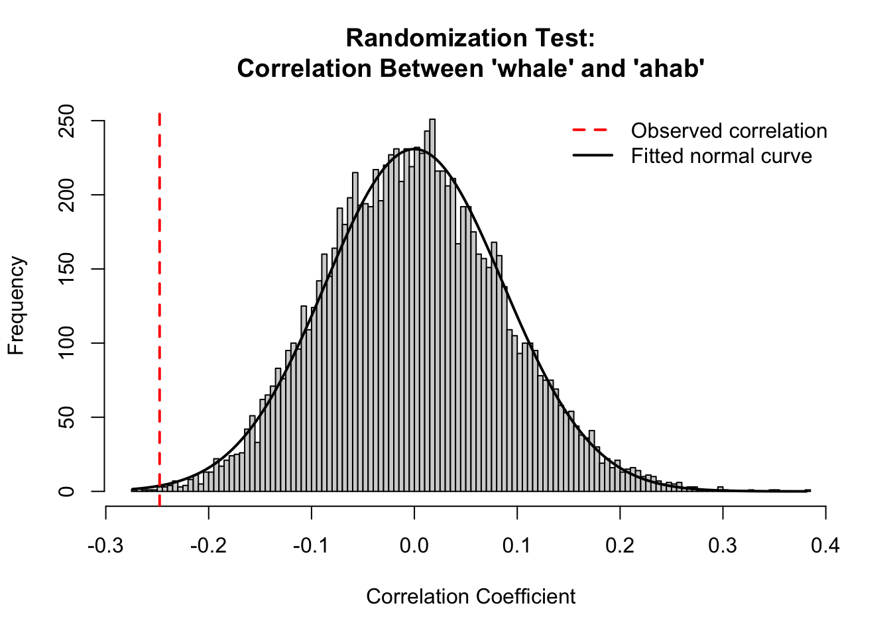
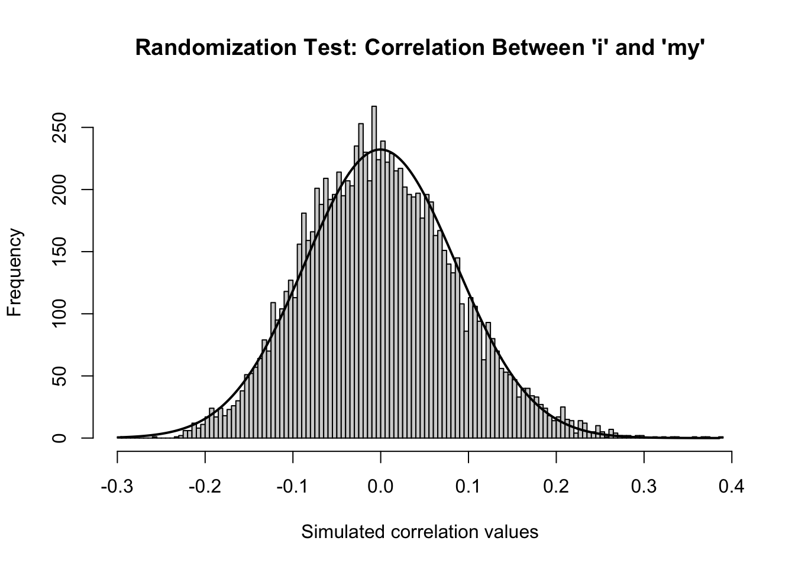

# Clear the workspace
rm(list = ls())
# Load the text file
text_v <- scan("data/text/melville.txt", what = "character", sep = "\n")
# Get starting point from CHAPTER 1 onward
start_v <- which(text_v == "CHAPTER 1. Loomings.")
novel_lines_v <- text_v[start_v:length(text_v)]
# Get chapter heading positions
chap_positions_v <- grep("CHAPTER \\d", novel_lines_v)
# Add the last position of the novel
last_position_v <- length(novel_lines_v)
chap_positions_v <- c(chap_positions_v, last_position_v)
# Create two empty lists to store word frequencies
chapter_raws_l <- list()
chapter_freqs_l <- list()
# Loop through each chapter and collect word frequencies
for(i in 1:length(chap_positions_v)) {
if(i != length(chap_positions_v)) {
chapter_title <- novel_lines_v[chap_positions_v[i]]
start <- chap_positions_v[i] + 1
end <- chap_positions_v[i + 1] - 1
chapter_lines_v <- novel_lines_v[start:end]
chapter_words_v <- tolower(paste(chapter_lines_v, collapse = " "))
chapter_words_l <- strsplit(chapter_words_v, "\\W")
chapter_word_v <- unlist(chapter_words_l)
chapter_word_v <- chapter_word_v[which(chapter_word_v != "")]
chapter_freqs_t <- table(chapter_word_v)
chapter_raws_l[[chapter_title]] <- chapter_freqs_t
chapter_freqs_l[[chapter_title]] <- 100 * (chapter_freqs_t / sum(chapter_freqs_t))
}
}
# Extract 'whale' and 'ahab' frequencies using lapply
whale_l <- lapply(chapter_freqs_l, "[", "whale")
ahab_l <- lapply(chapter_freqs_l, "[", "ahab")
# Convert to matrices using do.call and rbind
whales_m <- do.call(rbind, whale_l)
ahabs_m <- do.call(rbind, ahab_l)
# Convert matrices to numeric vectors
whales_v <- as.vector(whales_m[, 1])
ahabs_v <- as.vector(ahabs_m[, 1])
# Bind vectors column-wise into a new matrix
whales_ahabs_m <- cbind(whales_v, ahabs_v)
# Set column names
colnames(whales_ahabs_m) <- c("whale", "ahab")Chapter 6: Correlation – Text Analysis with R
This chapter introduces data frames, random sampling, and correlation. Then, perform permutation tests to assess significance of derived correlations.
Start-Up Code
Correlation Analysis
A correlation analysis attempts to determine the extent to which there is dependence, or linear dependence between two sets of points.
R offers a simple function, cor, for calculating the strength of possible correlation.
whale_l <- lapply(chapter_freqs_l, "[", "whale") # extract "whale" frequency from each chapter
whales_ahabs_m[1:16, ] # show first 16 rows of whale/arab frequency matrix whale ahab
[1,] 0.13368984 NA
[2,] 0.06882312 NA
[3,] 0.10000000 NA
[4,] NA NA
[5,] NA NA
[6,] 0.24067389 NA
[7,] 0.21097046 NA
[8,] NA NA
[9,] 0.24711697 NA
[10,] NA NA
[11,] NA NA
[12,] NA NA
[13,] 0.17341040 NA
[14,] NA NA
[15,] NA NA
[16,] 0.16037063 0.3385602We need to replace every NA values with 0 before calculating the correlation co-efficient.
whales_ahabs_m[which(is.na(whales_ahabs_m))] <- 0 # this code replaces N/A with 0
cor(whales_ahabs_m) # cor is the function used to run the correlation test whale ahab
whale 1.0000000 -0.2476991
ahab -0.2476991 1.0000000A two-column matrix is often an overkill while presenting information. Since, we are concerned with the correlation between ‘whale’ and ‘ahab’; it could be achieved by:
mycor <- cor(whales_ahabs_m[,"whale"], whales_ahabs_m[,"ahab"])
mycor[1] -0.2476991Here, ‘whale’ and ‘ahab’ have a correlation of around -0.248 suggesting a slight inverse relationship.
One way to contextualizing this coefficient is to calculate how likely it is to happen just by chance.
A Word About Data Frames
Just as it happens, data frames are R’s bread and butter data type.
They can be thought of as a table in database.
While they are similar to matrix, the difference is that matrix can’t hold characters while data frames are able to.
We denote data frame by ‘df’.
The goal is to convert whales_ahabs_mto a data frame and prepare it for randomization test in the next section.
x <- matrix(1, 3, 3)
x [,1] [,2] [,3]
[1,] 1 1 1
[2,] 1 1 1
[3,] 1 1 1class(x[1,2]) # retrieves the class of cell in first row of second column[1] "numeric"Now we change one of the cells into a character.
x[1,2] <- "Sam I am"
class(x[1,2])[1] "character"class(x[1,3])[1] "character"All the cells including all the 1’s got converted into “character” type.
However, a data frame can hold both ‘numeric’ and ‘character’ values.
x <- matrix(1,3,3)
x_df <- as.data.frame(x)
x_df V1 V2 V3
1 1 1 1
2 1 1 1
3 1 1 1Let’s fiddle around!
x_df[1,2] <- "I am Sam"
class(x_df[1,2])[1] "character"class(x_df[1,1])[1] "numeric"x_df[,2] # lists the values in second column[1] "I am Sam" "1" "1" x_df[,"V2"] # calling out the column name instead[1] "I am Sam" "1" "1" x_df$V2 # another shorthand to access column-specific data is also the use of $[1] "I am Sam" "1" "1" Testing Correlation with Randomization
First, let’s convert the matrix object whales_ahabs_m into a data frame called corr_data_f:
cor_data_df <- as.data.frame(whales_ahabs_m)
cor(cor_data_df) whale ahab
whale 1.0000000 -0.2476991
ahab -0.2476991 1.0000000Why Use Randomization?
Shuffling one of the columns (either ‘ahab’ or ‘whale’) and repeating this many times helps create a distribution of “chance correlations”. Then, we compare the original correlation to this distribution.
In R, we achieve this by using the sample() function which shuffles.
sample(c(1,2,3,4,5,6))[1] 6 4 5 3 2 1sample(cor_data_df$whale) # try this a few times [1] 0.96562379 0.00000000 0.55865922 0.30193237 0.54305663 0.00000000
[7] 0.23790642 0.06882312 0.83275503 0.76628352 0.22271715 0.07047216
[13] 0.87131367 0.71283096 0.00000000 0.87623220 0.85653105 0.00000000
[19] 0.16260163 0.96566524 0.41841004 0.00000000 0.67114094 0.82840237
[25] 0.41793313 0.83682008 0.50125313 1.26582278 0.19762846 0.35971223
[31] 0.88832487 0.00000000 0.00000000 0.44247788 0.17341040 2.13248639
[37] 1.35440181 0.62176166 1.77664975 0.15313936 0.00000000 0.00000000
[43] 0.60716454 0.00000000 0.24067389 1.24777184 0.00000000 0.29411765
[49] 0.08748906 0.27548209 0.18761726 0.24711697 1.51515152 1.82481752
[55] 0.00000000 0.00000000 0.06079027 0.00000000 0.04448399 0.15829046
[61] 0.11286682 0.11926058 0.11580776 0.39920160 0.69124424 1.29198966
[67] 0.16037063 0.13114754 0.69930070 0.08207934 0.00000000 0.64878893
[73] 0.80200501 0.00000000 0.41841004 1.70807453 0.77565632 0.21901007
[79] 1.26506024 0.16722408 0.00000000 1.02739726 0.32017076 0.28391557
[85] 0.07949126 1.76565008 0.24375381 0.46838407 1.15546218 0.00000000
[91] 0.38722168 0.10857763 0.29296875 1.05485232 0.89485459 1.03578154
[97] 0.00000000 0.15723270 0.00000000 0.06079027 0.64400716 0.61892131
[103] 1.07469103 0.10638298 2.02788340 0.89726335 1.09151973 0.66760365
[109] 0.34364261 0.61099796 0.13368984 0.98159509 1.00767754 0.00000000
[115] 0.00000000 0.00000000 0.94339623 0.15485869 0.81168831 0.56191467
[121] 0.00000000 0.00000000 1.04895105 0.00000000 0.39761431 2.06782465
[127] 0.21097046 0.17942584 0.00000000 0.69620253 0.10000000 0.78616352
[133] 0.76965366 0.82987552 0.58167717 0.14035088cor(sample(cor_data_df$whale), cor_data_df$ahab)[1] 0.1245902Initializing a loop to generate a vector holding 10,000 different randomized correlation values.
mycors_v <- NULL
for(i in 1:10000){
mycors_v <- c(
mycors_v,
cor(sample(cor_data_df$whale),
cor_data_df$ahab)
)
}min(mycors_v) # minimum value[1] -0.2740345max(mycors_v) # max value [1] 0.3812482range(mycors_v) # range of values[1] -0.2740345 0.3812482mean(mycors_v)[1] -7.015074e-05sd(mycors_v)[1] 0.08641301summary(mycors_v) # summary stats Min. 1st Qu. Median Mean 3rd Qu. Max.
-0.2740345 -0.0607997 -0.0018245 -0.0000702 0.0572640 0.3812482 Now we plot a histogram to show the spread.
# Create histogram of simulated correlation values
h <- hist(mycors_v, breaks = 100, col = "lightgray",
xlab = "Correlation Coefficient",
main = "Randomization Test:\nCorrelation Between 'whale' and 'ahab'",
plot = TRUE)
# Create a sequence for the normal curve
xfit <- seq(min(mycors_v), max(mycors_v), length = 1000)
# Normal distribution using simulated mean and standard deviation
yfit <- dnorm(xfit, mean = mean(mycors_v), sd = sd(mycors_v))
# Scale the y-values to align with histogram height
yfit <- yfit * diff(h$mids[1:2]) * length(mycors_v)
# Draw the normal curve
lines(xfit, yfit, col = "black", lwd = 2)
# Add a red line to show the actual observed correlation
abline(v = mycor, col = "red", lwd = 2, lty = 2)
# Optional: add a legend
legend("topright",
legend = c("Observed correlation", "Fitted normal curve"),
col = c("red", "black"),
lty = c(2, 1),
lwd = 2,
bty = "n")
The plot reveals just how much the data cluster around the mean. Under the assumption of no relationship, the observed correlation is very rare.
Practice Problem #1
We expanded our analysis to include two-person pronouns “i” and “my” as additional variables. After appending these to our frequency matrix and replacing missing values with zero, we used the cor() function to generate a correlation matrix showing pairwise relationships across all four terms.
This allows us to investigate whether the narrator’s presence aligns with Ahab, Whale, or both.
# Extract 'i' and 'my' relative frequencies from each chapter
i_l <- lapply(chapter_freqs_l, "[", "i")
my_l <- lapply(chapter_freqs_l, "[", "my")# Convert to numeric vectors (as done for whale/ahab)
i_m <- do.call(rbind, i_l)
my_m <- do.call(rbind, my_l)
i_v <- as.vector(i_m[,1])
my_v <- as.vector(my_m[,1])# Combine all four into one matrix
full_m <- cbind(whales_v, ahabs_v, i_v, my_v)
# Name columns properly
colnames(full_m) <- c("whale", "ahab", "i", "my")
# Replace all NA values with 0
full_m[which(is.na(full_m))] <- 0
# Calculate pairwise correlations
cor(full_m) whale ahab i my
whale 1.0000000 -0.24769910 -0.27175540 -0.2470746
ahab -0.2476991 1.00000000 0.06999928 0.1035990
i -0.2717554 0.06999928 1.00000000 0.7737531
my -0.2470746 0.10359895 0.77375305 1.0000000“i” and “my” are closely linked — they track the narrator’s presence.
These words have inverse relationships with “whale”, showing that personal chapters focus less on the whale.
There’s almost no alignment between Ahab and the narrator, suggesting that when Ahab is central, the narrator becomes more distant.
Practice Problem #2
We ran a randomization test to evaluate whether the observed correlation between "i" and "my" (≈ +0.77) is significant. By shuffling the "i" column 10,000 times and recalculating the correlation each time, we created a distribution of “chance” correlations. The observed value was then compared to this distribution.
A p-value near 0 suggests the correlation is not due to chance, confirming that the narrator’s personal presence is consistent and meaningful across chapters.
cor_data_df <- as.data.frame(full_m) # full_m has whale, ahab, i, mymycors_v <- NULL # empty vector to hold correlation values
for(i in 1:10000){
mycors_v <- c(
mycors_v,
cor(sample(cor_data_df$i), cor_data_df$my) # shuffle "i", keep "my"
)
}# Plot histogram of randomized correlations
h <- hist(mycors_v, breaks = 100, col = "lightgray",
xlab = "Simulated correlation values",
main = "Randomization Test: Correlation Between 'i' and 'my'")
# Overlay a normal curve
xfit <- seq(min(mycors_v), max(mycors_v), length = 1000)
yfit <- dnorm(xfit, mean = mean(mycors_v), sd = sd(mycors_v))
yfit <- yfit * diff(h$mids[1:2]) * length(mycors_v)
lines(xfit, yfit, col = "black", lwd = 2)
# Add a red line for the observed correlation
abline(v = cor_data_df |> with(cor(i, my)), col = "red", lty = 2, lwd = 2)
# Observed correlation between "i" and "my"
observed <- cor(cor_data_df$i, cor_data_df$my)
# Proportion of random values ≥ observed
p_val <- sum(mycors_v >= observed) / length(mycors_v)
p_val[1] 0Our randomization test for the correlation between "i" and "my" returned a p-value of 0, indicating that none of the 10,000 shuffled simulations produced a correlation as large as the one observed (~0.77). This confirms a statistically significant association between these two first-person pronouns — a consistent marker of the narrator’s presence.